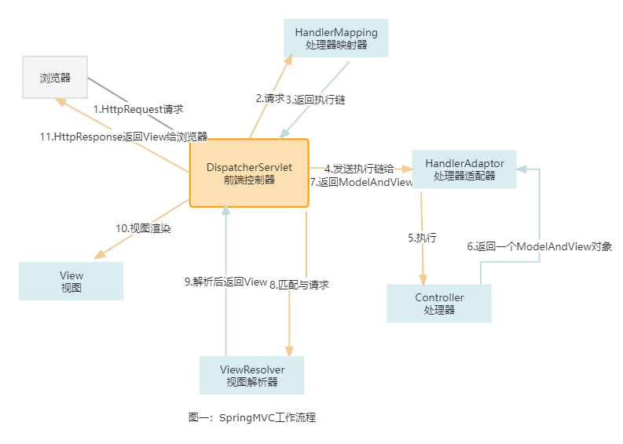

一、SpringMVC的常用组件
1）DispatcherServlet
是一种前端控制器，由框架提供。
作用：统一处理请求和响应。除此之外还是整个流程控制的中心，由 DispatcherServlet 来调用其他组件，处理用户的请求
2）HandlerMapping
处理器映射器，由框架提供。
作用：根据请求的 url、method 等信息来查找具体的 Handler(一般来讲是Controller)
3）Handler(一般来讲是Controller)
处理器，注意，这个需由工程师自己开发。
作用：在 DispatcherServlet 的控制下，Handler对具体的用户请求进行处理
4）HandlerAdapter
处理器适配器 ，由框架提供。
作用：根据映射器找到的处理器 Handler 信息，按照特定的规则去执行相关的处理器 Handler。
小结：
Handler 是用来干活的工具；
HandlerMapping 用于根据需要干的活找到相应的工具；
HandlerAdapter 是使用工具干活的人。详细讲解可以看这篇博客(115条消息) SpringMVC 处理器适配器详解_aFa攻防实验室的博客-CSDN博客_处理器适配器
5）ViewResolver
视图解析器，由框架提供。
作用： ViewResolver 负责将处理结果生成 View 视图。 ViewResolver 首先根据逻辑视图名解析成物理图名，即具体的页面地址，再生成 View 视图对象，最后对 View 进行渲染将处理结果通过页面展示给用户。
6）View
视图，工程师自己开发
作用：View接口的职责就是接收model对象、Request对象、Response对象，并渲染输出结果给Response对象。
二、SpringMVC的工作流程
咱们先看图，从左上角的浏览器进行顺时针观看（话说有没有画图大佬可以指教一下俺 9.9 ，在线求教~） 具体的流程：
1. 用户通过浏览器发起 HttpRequest 请求到前端控制器 (DispatcherServlet)。
2. DispatcherServlet 将用户请求发送给处理器映射器 (HandlerMapping)。
3. 处理器映射器 (HandlerMapping)会根据请求，找到负责处理该请求的处理器，并将其封装为处理器执行链 返回 (HandlerExecutionChain) 给 DispatcherServlet
4. DispatcherServlet 会根据 处理器执行链 中的处理器，找到能够执行该处理器的处理器适配器(HandlerAdaptor) --注，处理器适配器有多个
5. 处理器适配器 (HandlerAdapter) 会调用对应的具体的 Controller
6. Controller 将处理结果及要跳转的视图封装到一个对象 ModelAndView 中并将其返回给处理器适配器 (HandlerAdaptor)
7. HandlerAdaptor 直接将 ModelAndView 交给 DispatcherServlet ，至此，业务处理完毕
8. 业务处理完毕后，我们需要将处理结果展示给用户。于是DisptcherServlet 调用 ViewResolver， 将 ModelAndView 中的视图名称封装为视图对象
9. ViewResolver 将封装好的视图 (View) 对象返回给 DIspatcherServlet
10. DispatcherServlet 调用视图对象，让其自己 (View) 进行渲染（将模型数据填充至视图中），形成响应对象 (HttpResponse)
11. 前端控制器 (DispatcherServlet) 响应 (HttpResponse) 给浏览器，展示在页面上。
2. DispatcherServlet 将用户请求发送给处理器映射器 (HandlerMapping)。
3. 处理器映射器 (HandlerMapping)会根据请求，找到负责处理该请求的处理器，并将其封装为处理器执行链 返回 (HandlerExecutionChain) 给 DispatcherServlet
4. DispatcherServlet 会根据 处理器执行链 中的处理器，找到能够执行该处理器的处理器适配器(HandlerAdaptor) --注，处理器适配器有多个
5. 处理器适配器 (HandlerAdapter) 会调用对应的具体的 Controller
6. Controller 将处理结果及要跳转的视图封装到一个对象 ModelAndView 中并将其返回给处理器适配器 (HandlerAdaptor)
7. HandlerAdaptor 直接将 ModelAndView 交给 DispatcherServlet ，至此，业务处理完毕
8. 业务处理完毕后，我们需要将处理结果展示给用户。于是DisptcherServlet 调用 ViewResolver， 将 ModelAndView 中的视图名称封装为视图对象
9. ViewResolver 将封装好的视图 (View) 对象返回给 DIspatcherServlet
10. DispatcherServlet 调用视图对象，让其自己 (View) 进行渲染（将模型数据填充至视图中），形成响应对象 (HttpResponse)
11. 前端控制器 (DispatcherServlet) 响应 (HttpResponse) 给浏览器，展示在页面上。